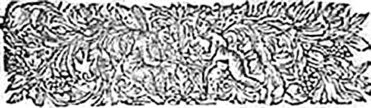
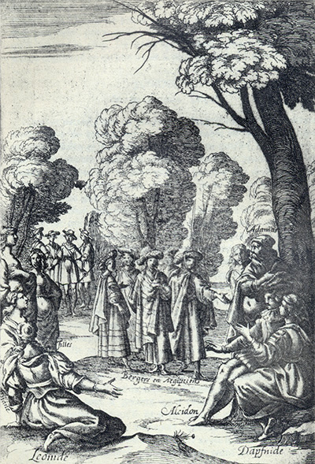
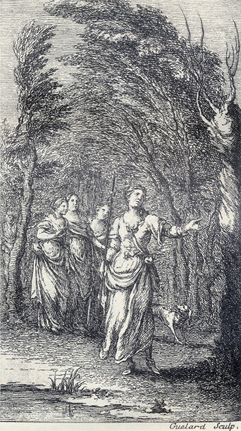

Tableaux analytiquesIndex des noms propres Tableaux des personnages Répertoire
(autres noms propres)Glossaire Dictionnaire des fréquences Notes
Topographie du sitePlan du site Index de l'apparat critique Bibliographie Liens externes Liens vers Gallica
SupportGuide de la navigation FAQ Nouveautés Remerciements Auteur du site
Effacer les témoins
(cookies)X
Accueil Préface Choix éditoriaux Les Quatrièmes parties Les
IntroductionsAstréesposthumes L'Édition de Vaganay Présentation des textes Pleins feux sur
L'Astrée
Lecture de
L'AstréeI
Éd. de référenceepartie 1621 II
epartie 1621 III
epartie 1621 IV
epartie 1624
I
Éd. préliminaireepartie 1607 II
epartie 1610 III
epartie 1619
Éd. fonctionnelleavec gravuresI
epartie II
epartie III
epartie IV
epartie
en Word
Éd. téléchargeableen Word
Chronologie historique
Résumédes intrigues
APPARAT CRITIQUEÉvolution de
Le romanL'AstréeVariantes confrontées Variantes, I
epartie Variantes, II
epartie Variantes, III
epartie Analyse des illustrations Parallèles suggérés Résumé des intrigues Chronologie historique Témoignages Du Crozet Sorel Guéret Poèmes de Lingendes
Biographie Biographes, critiques Événements Généalogie Testament Inventaire Héritages Poèmes Épîtres Lettres Remarques
Le romanciersur Malherbe
Bibliographie Liens externes Liens vers Gallica Cartothèque Galerie de portraits Film d'Eric Rohmer Partitions d'A. Naigeon Photos du Forez
Ressources

«
@
»
X

avancéeRecherche ciblée Fils d'Arianne Hyperbase (É. Brunet) Accès aux pages/folios Concordances-Vaganay
police condenséeL'AstréeRésumé du roman Chronologie historique Choix éditoriaux Présentation des textes Évolution Illustrations
 Annexe
Annexe

L'Astrée
L'Astrée fonctionnelle
L'Astrée

Livre 9

Livre 11

L'Astrée
d'Honoré d'Urfé
Troisième partie
Livre 10

Des bergers déguisés en Égyptiennes offrent de dire la bonne aventure
Daphnide, Alcidon, Adamas, Phillis, Diane et Léonide s'entretiennent (III, 10, 425 verso)
L'AstréeIII, 10. Édition Vaganay**, 1925Des bergers déguisés en Égyptiennes offrent de dire la bonne aventure
Daphnide, Alcidon, Adamas, Phillis, Diane et Léonide s'entretiennent (III, 10, 425 verso)
(Voir Illustrations)

Gravure signée Guélard
Astrée et Diane [le graveur ajoute Léonide ou Phillis] surprennent Alexis
habillée en bergère (III, 10, 437 recto)
L'AstréeIII, 10. Édition Vaganay**, 1925Gravure signée Guélard
Astrée et Diane [le graveur ajoute Léonide ou Phillis] surprennent Alexis
habillée en bergère (III, 10, 437 recto)
(Voir Illustrations)
Éd. de 1619, 397 recto.
Éd. Vaganay, III, p. 521.
du Berger Silvandre sur le jugement
de Diane.

S'En trouvera-t-il point quelqu'une
Parmi vous qui veuille savoir
Quelle doit être sa fortune ?
Nous la lui ferons bientôt voir ;
Mais nous voudrions avec vous
La pouvoir rencontrer pour nous.
II.
Venez vers nous, ô curieuses,
Puisque le futur nous savons,
Pour apprendre à vous rendre heureuses,
Et vous verrez que nous pouvons
Aussi bien votre heur deviner
Que vous le nôtre nous donner.
III.
Nous ne sommes pas infidèles,
Quoique d'Égypte nous soyons.
Nous adorons toutes les belles,
Et les adorant nous croyons
Que le comble de notre bien
En elles nous trouverions bien.
IV.
Fugitives de notre patrie,
Attendant un heureux retour,
Le larcin est notre industrie.
Mais qui ne sait que de l'Amour,
Puisqu'ainsi veulent les destins,
Les dons ne sont que des larcins ?

Mourir absent de cette belle,
Et remourir étant auprès,
Que faut-il espérer après
Une fortune si cruelle ?
Ma voix d'une plainte éternelle,
Loin d'elle était toute en regrets,
Et
semble que je sois exprès
Près d'elle
pour me plaindre d'elle.
Puisqu'également le malheur,
Dans le bien et dans la douleur,
Emporte sur nous la victoire,
Mon cœur, que sera-ce de nous,
Et qui désormais pourra croire,
Que nous puissions souffrir ces coups ?
Et qui désormais pourra croire,
Que nous puissions souffrir ces coups ?

Déesse
η dont la main de son volant armée,
Coupe de nos moissons les épis entassés,
Et puis en gerbe d'or en ton poing ramassés,
Fais voir ce qui te rend des mortels estimée.
Déesse dont la main est tant accoutumée
Aux moissons dont nos champs richement tapissés
Semblent du faix très grand être presque oppressés,
Peine du Laboureur toutefois bien-aimée.
Déesse par pitié tourne sur moi les yeux
Et dis-moi si jamais tu vis en quelques lieux
De nos jeunes guérets les campagnes plus pleines,
Que mon cœur de tourments en l'état où je suis,
Et puis raconte à tous qu'une moisson d'ennuis
Se trouve dans mon cœur aussi bien qu'en nos plaines.
Peine du Laboureur toutefois bien-aimée.
Déesse par pitié tourne sur moi les yeux
η,Et dis-moi si jamais tu vis en quelques lieux
De nos jeunes guérets les campagnes plus pleines,
Que mon cœur de tourments en l'état où je suis,
Et puis raconte à tous qu'une moisson d'ennuis
Se trouve dans mon cœur aussi bien qu'en nos plaines.
qu'elle avait ressenties en ce lieu, et qu'elle avait remis dans le sein de sa bergère, avec tant de serments reçus de sa fidélité, elle ne put s'empêcher de soupirer ces vers :

N'est-ce pas en votre présence,
Arbres feuillus et bois heureux,
Où tant de serments amoureux
Ont pris autrefois leur naissance ?
Dites-moi si pendant l'absence
L'on s'est jamais souvenu d'eux,
Ou si les serments de tous deux
Ne sont plus en sa souvenance ?
Mais qu'est-ce que je veux savoir,
Puis-je bien me tant décevoir,
Que d'estimer que la pensée
Qu'elle en peut avoir eue ici,
Ne l'ait pas autant oppressée,
Qu'elle m'a laissé de souci ?
Ne l'ait pas autant oppressée,
Qu'elle m'a laissé de souci ?

Peut-on mourir pour trop aimer ?
Si l'on mourait, je serais morte,
Car jamais une Amour si forte
N'a pu dans un cœur s'allumer.
Dans son feu peut-on s'enflammer ?
Si l'on brûlait en quelque sorte,
Je crois que le feu que je porte
M'aurait déjà fait consommer.
Mais si l'on ne meurt point d'Amour,
Qui me donne cent fois le jour
Tant et tant de morts que j'endure ?
Et si son feu n'a point d'ardeur,
D'où vient que j'en ai la brûlure
Si cuisante dedans le cœur ?

Espoirs η qui me trompez, et qui ne pouvez être,
Pensers qui tourmentez sans cesse mon repos,
Désirs qui me brûlez jusqu'au profond des os,
Travaux que sans pitié je vois toujours accroître,
Soupirs
η, les Messagers du cœur qui vous fait naître,
Pleurs que déjà mon œil ne peut plus tenir clos,
Serments qui vous changez à tous coups sans propos,
Desseins dont un clin d'œil est bien souvent le maître,
Espoirs, pensers, désirs, travaux, soupirs, et pleurs,
Vous, serments, vous, desseins, enfants de mes douleurs,
Ne finirez-vous point quelquefois ma misère
Avant que du trépas je ressente l'effort ?
Ou s'il faut que pour vous je semble à la vipère
Qui donne vie à ceux qui lui donnent la mort ?
Ou s'il faut que pour vous je semble à la vipère
η,Qui donne vie à ceux qui lui donnent la mort ?

Faire vivre et mourir avec un même effort,
Embraser
η
tous les cœurs, et n'être que de glace,
S'armer en même temps de douceur et d'audace,
Et porter dans les yeux et l'Amour et la Mort,
Attirer tous les cœurs d'un extrême transport,
Et les désespérer d'obtenir quelque grâce,
Du bonheur au malheur ne mettre point d'espace,
Et joindre en un sujet ces contraires d'accord
η,
Mais languir au rebours d'une amour trop extrême,
Brûler sans que ce feu s'allume qu'en soi-même,
Pour revivre en autrui vouloir mourir en soi,
Et pour gage donner et son cœur et son âme,
Que je puisse mourir, si ce n'est vous, Madame,
Et remourir encore, si c'est autre que moi.
Fin du dixième Livre
Livre 9
Livre 11
Référence électronique :
document.write('"'+document.title.substr(0, document.title.indexOf("-")-1)+'". '+"Dernière mise à jour : "+ExtractDate(document.lastModified)+".")Deux visages de L'Astrée.
©2005-2020 E. Henein.
URL :
var today = new Date();
document.write(document.URL +
"<br>Consulté le : " + today.toLocaleDateString("fr-FR") + ".");
var _gaq = _gaq || [];
_gaq.push(['_setAccount', 'UA-19288475-1']);
_gaq.push(['_trackPageview']);
(function() {
var ga = document.createElement('script'); ga.type = 'text/javascript'; ga.async = true;
ga.src = ('https:' == document.location.protocol ? 'https://ssl' : 'http://www') + '.google-analytics.com/ga.js';
var s = document.getElementsByTagName('script')[0]; s.parentNode.insertBefore(ga, s);
})();
Deux visages de L'Astrée.
©2005-2019 Eglal Henein. Creative Commons 4 
Édition critique de la première partie de L'Astrée (1607, 1621)
mise en ligne le 9 avril 2007
Édition critique de la deuxième partie de L'Astrée (1610, 1621)
mise en ligne le 10 octobre 2010
Édition critique de la troisième partie de L'Astrée (1619, 1621)
mise en ligne le 1er novembre 2014
Édition critique de la quatrième partie de L'Astrée (1624)
mise en ligne le 15 janvier 2019
document.write("Dernière mise à jour : "+ExtractDate(document.lastModified))